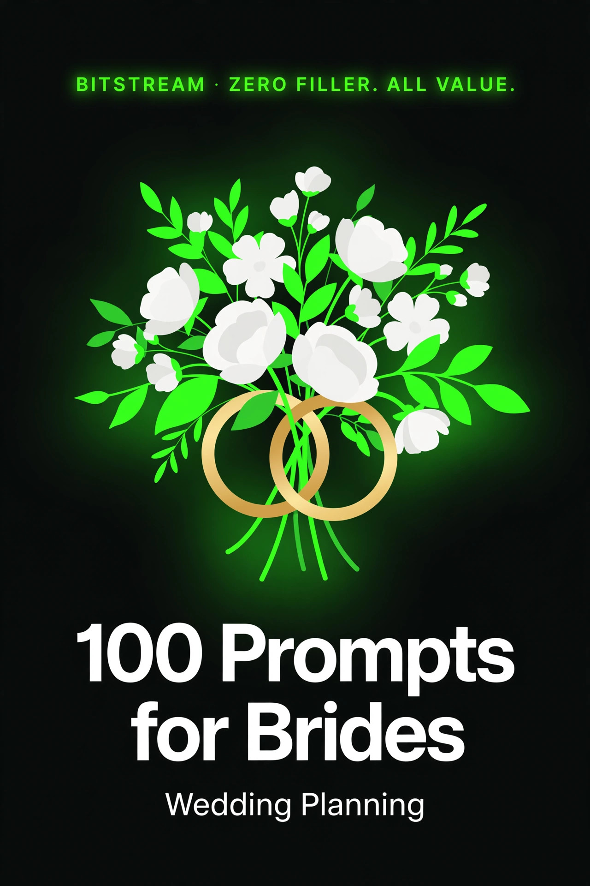

BITSTREAM · ZERO FILLER. ALL VALUE.
100 Prompts
for Brides
100 copy-paste prompts for planning your wedding.
Open a free AI tool, paste, fill in the blanks, done.
ESSENTIAL PACK · $7.99
How to use this pack (60 seconds)
- Open a free AI tool — ChatGPT (chatgpt.com), Claude (claude.ai), or Gemini (gemini.google.com). No account tricks, no paid plan needed.
- Copy any prompt and replace the [BRACKETED] parts with your details.
- Be specific. Your date, your guest count, your budget, your vibe — specifics in, quality out. "Plan my wedding" gets a generic list. "Plan a $18,000 October wedding in Austin for 75 guests with a garden-party vibe" gets a plan you can actually use.
- Treat the first answer as a draft. Reply with "make it shorter," "more romantic," or "cheaper options" until it's right.
- You're the bride — AI is your assistant. It can draft vows, compare venues, and build timelines, but you sign off on everything. Check prices, contracts, and anything that touches your budget before you commit.
Rule 1 — Describe your wedding. Date, budget, guest count, and style matter more than the prompt wording. "A $15,000 fall wedding for 80 guests in Denver, rustic but modern" gets you usable answers.
Rule 2 — Verify money and vendors. For quotes, contracts, and travel, ask for sources and confirm directly with the vendor. AI prices are estimates, not bids.
Rule 3 — Keep your voice. Vows, speeches, and wording should sound like YOU. Use AI for structure and ideas, then rewrite the parts that matter in your own words.
1 · Budget & Planning Timeline
Realistic budgets, month-by-month timelines, and keeping the money fights to zero.
PROMPT 01
Realistic wedding budget builder
Build a realistic wedding budget for a total of [$20,000], [90 guests], [wedding in Austin, Texas]. Show the typical percentage split across venue, food, photography, attire, flowers, music, and extras — and adjust for [a priorities list: food and photos matter most]. Include a 10% buffer.
PROMPT 02
Month-by-month planning timeline
My wedding is [October 10, 2026] — [13 months] away. Build a month-by-month planning checklist: what to book first, what can wait, and the deadlines that actually matter if I skip them.
PROMPT 03
Find the budget leaks
Here's my wedding budget so far: [paste your budget or list what you've spent]. Total budget is [$25,000]. Tell me where I'm overspending versus typical ranges, and suggest 5 specific cuts that won't hurt the guest experience.
PROMPT 04
DIY vs. hire calculator
For my [75-guest] wedding on a [$15,000] budget, tell me which of these are genuinely worth DIY-ing and which I should hire a pro for: [flowers, invitations, cake, makeup, day-of coordination, photo booth]. Be honest about the hidden costs and stress of each DIY option.
PROMPT 05
Off-season and off-day savings
I'm flexible on my wedding date in [2026] and live near [Charlotte, NC]. Explain exactly how much a Friday or Sunday wedding — or a January through March date — typically saves on venue, photographer, and vendors. Give me 3 sample budget comparisons: Saturday in May vs. Friday in November vs. Sunday in February.
PROMPT 06
Who pays for what
Help my fiancé and I have the "who pays for what" conversation. Traditionally each side covers [his parents offered $5,000, my parents offered $3,000, we have $12,000 saved]. Suggest 3 fair ways to split costs between us and the families, and give me talking points to keep it calm and respectful.
PROMPT 07
Hidden wedding costs checklist
List the 20 most commonly forgotten wedding expenses — the ones that surprise brides — with a typical price range for each. My wedding: [100 guests, outdoor venue]. Then give me a simple tracker format to log them as they come up.
PROMPT 08
Tight-budget priority sorter
My budget is only [$8,000] for [50 guests]. Rank every wedding expense category by impact on the guest experience, then tell me what to splurge on, what to get budget-friendly, and what to skip entirely. No guilt — just a great small wedding.
PROMPT 09
Elopement vs. wedding comparison
Help me decide between a [$30,000] wedding for [120 guests] and an elopement with [8 people] in [the Smoky Mountains] plus a casual party later. Compare: total cost, stress level, what we'd miss, and what guests would miss. Then ask me 5 questions to help me choose.
PROMPT 10
Venue tour budget questions
Give me 15 specific money questions to ask on a venue tour that reveal hidden fees — things like [cake-cutting fees, overtime rates, vendor restrictions, setup charges]. My budget is [$20,000] and the venue quotes [$6,500] for [100 guests].
PROMPT 11
Payment timeline organizer
Organize my wedding payments into a schedule. Vendors booked: [venue, photographer, caterer, florist, DJ] with deposits of [$1,500, $800, $2,000, $500, $700]. Tell me what's typically due when (deposit, 50%, final), and flag which vendors usually expect tips at the end so I budget cash for the day-of.
PROMPT 12
Destination wedding budget reality check
We want a destination wedding in [Cancun] for [40 guests]. Break down the real costs: resort packages vs. outside vendors, what we pay for guests (if anything), travel-day extras, and the 5 costs couples always forget. Compare it to a local wedding of the same size.
PROMPT 13
Wedding insurance explainer
Explain wedding insurance to me in plain language: what it covers, what it doesn't, typical cost for a [$25,000] wedding, and whether I need it for [an outdoor venue in hurricane season]. Then give me 3 specific scenarios where it would have paid for itself.
2 · Finding Your Venue & Vendors
Tours, contracts, and the questions that separate great vendors from expensive regrets.
PROMPT 14
Venue style quiz for two
Ask my fiancé and me 12 questions — one at a time — to figure out our venue style: [indoor vs. outdoor, modern vs. rustic, city vs. countryside, morning vs. evening]. Then recommend 5 venue types that fit both of us and explain what each typically costs for [100 guests].
PROMPT 15
Venue tour checklist
Give me a printable-style venue tour checklist for a [barn venue, 90 guests, outdoor ceremony + indoor reception]. Cover: lighting, parking, bathrooms, kitchen, bridal suite, weather backup, sound restrictions, and the questions that reveal deal-breakers.
PROMPT 16
Compare three venues
Help me compare these venues apples-to-apples: [Venue A: $7,000, tables/chairs included, no outside catering; Venue B: $4,500, BYO everything; Venue C: $9,000, catering + coordinator included]. Build a true-cost comparison for [100 guests] and tell me which is actually cheapest once I fill in the gaps.
PROMPT 17
Vendor contract red flags
I'm about to sign a [photography] contract for [$2,800]. List the 10 clauses I should check before signing — cancellation, overtime, image delivery, backup plans, meal requirements — and tell me what's normal vs. a red flag for each.
PROMPT 18
Photographer interview questions
Give me 15 questions to ask a wedding photographer before booking, beyond the obvious price ones. I want [a candid, documentary style] and care about [getting family portraits done fast, not staged for an hour]. Include 3 questions that reveal whether their style fits my personality.
PROMPT 19
Caterer tasting game plan
We have a tasting with [a caterer quoting $95/plate for 100 guests] next week. Give me: what to look for during the tasting, 10 questions to ask about [dietary restrictions, service style, staffing, leftovers], and how to negotiate without being awkward.
PROMPT 20
Florist budget translator
My flower budget is [$1,500] and I want [lush, garden-style arrangements, blush and cream]. Tell me what's realistic at this budget, which 3 arrangements to prioritize, where to cut (repurpose ceremony flowers at the reception?), and 5 in-season flowers that look expensive but aren't.
PROMPT 21
DJ vs. band decision
Help me choose between a DJ at [$1,200] and a live band at [$4,500] for [a 120-guest reception in a venue with a 10pm noise curfew]. Compare energy, logistics, must-have song flexibility, and value — then ask me the 3 questions that matter most for this decision.
PROMPT 22
Day-of coordinator interview
I'm hiring a day-of coordinator with a [$1,200] budget. Give me 12 interview questions that reveal whether they can actually run a wedding day — handling [a late vendor, a drunk uncle, a rain plan] — plus what to ask about their timeline template and rehearsal attendance.
PROMPT 23
Hair and makeup trial checklist
My hair and makeup trial is next month for [an outdoor June wedding, I want a natural look that lasts all day]. Give me: what to bring (photos, veil?), 8 things to test during the trial, and how to give feedback if I don't love it without hurting anyone's feelings.
PROMPT 24
Videographer: worth it or not
Videography quotes are [$2,500–$4,000] and my budget is tight. Give me an honest breakdown of what couples say they regret most: skipping video, or paying for it and never watching it. Then suggest 2 cheaper ways to capture the day (like [a videographer for ceremony only]).
PROMPT 25
Vendor review decoder
I found a [florist] with [4.6 stars, 80 reviews] and another with [5.0 stars, 12 reviews]. Help me read between the lines: what review patterns matter, which complaints are normal vs. deal-breakers, and 5 questions to ask their past clients if I can find them.
PROMPT 26
Negotiate with vendors politely
Give me polite, copy-paste negotiation scripts for: [asking a photographer to add an hour, asking a florist for a budget version of a design I love, asking a venue to waive the cake-cutting fee]. Firm but warm — I don't want to burn bridges before the wedding.
3 · Dress, Attire & Beauty
Finding THE dress, dressing the wedding party, and beauty that survives happy tears.
PROMPT 27
Dress silhouette matchmaker
Ask me about my body shape, style preferences, and wedding vibe, then recommend 3 dress silhouettes to try first for [an outdoor garden wedding, I love romantic and simple]. Tell me which necklines and fabrics photograph best in [daylight].
PROMPT 28
Dress shopping game plan
I'm going dress shopping for the first time. My budget is [$1,800 including alterations], I'm a [street size 12], and I want [something elegant, not princess-y]. Give me: how to prep, what to bring, 5 questions to ask the consultant, and how to know when to stop shopping.
PROMPT 29
Dress alteration timeline
I bought my dress and the wedding is in [5 months]. Lay out the alteration schedule: when to schedule the first fitting, how many fittings to expect, what typically costs what (hem, bustle, taking in), and how to avoid the last-minute alteration panic.
PROMPT 30
Bridal party dress diplomacy
My bridesmaids have [4 different body types and budgets from $100 to $250]. Suggest 3 dress strategies — mismatched same-color, convertible dresses, or one designer — and give me a kind script to share the plan without anyone feeling singled out.
PROMPT 31
Second look or reception outfit
Convince me (or talk me out of) a second outfit for the reception. My dress is [a fitted mermaid gown], the reception is [4 hours with dancing], and my budget has [$300] of wiggle room. Give me 3 fun second-look ideas if I say yes.
PROMPT 32
Shoes you'll actually survive
Help me pick wedding shoes for [an outdoor ceremony on grass, then dancing until midnight]. I want [heels in photos but comfort in reality]. Recommend shoe types, heel heights, and the "second pair" strategy — plus how to break them in without ruining them.
PROMPT 33
Jewelry and veil styling
My dress has [a detailed lace bodice and sweetheart neckline]. Help me choose: veil or no veil, earrings vs. necklace, and how much jewelry is too much. My style is [classic with a modern edge] and my wedding is [semi-formal].
PROMPT 34
Wedding day beauty timeline
Build my wedding morning beauty schedule. Ceremony at [4:30pm], I have [4 bridesmaids + my mom + me], hair and makeup team of [2 artists], and photos start at [2:30pm]. Work backwards with exact start times and buffer for running late.
PROMPT 35
Skincare countdown to the wedding
My wedding is [4 months] away and I want my skin at its best without risking a breakout disaster. Build a simple month-by-month plan: what to start now, what to avoid in the final weeks, and a safe 3-day glow-up routine for the week of the wedding. No extreme treatments.
PROMPT 36
Teeth whitening safe plan
Give me a practical teeth-whitening plan for a bride [3 months out]: at-home vs. professional options, what works without sensitivity issues, when to stop before the wedding, and how to keep the results for photos. Skip anything harsh or risky.
PROMPT 37
Groom and groomsmen attire guide
My fiancé wants [a navy suit, not a tux] for our [semi-formal outdoor wedding]. Help me style him: suit details, shirt, tie vs. bow tie, pocket square, shoes — and what the groomsmen should wear so he still stands out.
PROMPT 38
Something old, new, borrowed, blue
Give me 15 meaningful ideas for "something old, something new, something borrowed, something blue" — beyond the clichés. My vibe: [sentimental but not cheesy, my grandma is my hero]. Include wearable options for each one.
PROMPT 39
Emergency kit for the wedding day
Build the ultimate bridal emergency kit list: stain remover, sewing supplies, pain relief, touch-up makeup, snacks, and the 10 things brides always forget. Pack it as a checklist I can hand to my maid of honor.
4 · Invitations, Wording & Stationery
Save-the-dates to thank-you notes — what to say and how to say it beautifully.
PROMPT 40
Guest list builder (no drama)
Help me build my guest list for a [100-person] wedding without family drama. Give me a tiered system — must-invites, should-invites, would-be-nice — and scripts for telling [coworkers and distant cousins] they're not invited. Plus: how to handle the plus-one question.
PROMPT 41
Invitation wording for tricky families
Write my invitation wording. Situation: [both parents divorced and remarried, my mom and stepdad are hosting with my fiancé's parents]. I want [formal but warm] wording that honors everyone without a paragraph of names.
PROMPT 42
Adults-only wording (kindly)
We're having an adults-only wedding. Give me 5 warm, non-apologetic ways to say it on the invitation and website — firm but loving — plus a script for when a parent pushes back about [their kids].
PROMPT 43
Digital vs. paper invitations
Help me decide: paper invitations at [~$3 each for 100 guests] vs. beautiful digital ones. Compare cost, guest experience, RSVP rates, and keepsake value — then recommend a hybrid option if one exists for a [modern, semi-formal] wedding.
PROMPT 44
Wedding website copywriter
Write the copy for my wedding website: our story ([we met at a bookstore in 2019]), schedule, travel info, dress code ([garden formal]), registry note, and an FAQ. Tone: [warm, funny, a little nerdy]. Keep each section under 100 words.
PROMPT 45
RSVP wording that gets answers
Write RSVP card and digital wording for a [plated dinner with 3 entrée choices + a kids' option] that actually gets people to respond on time. Include a firm but friendly RSVP deadline ([6 weeks before]) and what to write when someone doesn't respond.
PROMPT 46
Day-of stationery checklist
List every piece of day-of stationery I might need: [ceremony programs, seating chart, place cards, menus, welcome sign, bar sign, table numbers]. Tell me what's essential, what's nice-to-have, and what's skip-able for a [75-guest] wedding on a [tight stationery budget].
PROMPT 47
Ceremony program writer
Write my ceremony program for a [30-minute outdoor ceremony] with [2 readings, a unity candle, and a live guitarist]. Include: order of events, wedding party names, and a sweet thank-you note to guests. Format it so I can hand it to a designer.
PROMPT 48
Seating chart strategy
Help me build a seating chart for [90 guests, 10 tables of 9]. My challenges: [divorced parents who don't speak, two friend groups that don't know each other, one uncle who gets loud]. Give me a strategy, table-by-table logic, and a diplomatic way to assign seats.
PROMPT 49
Thank-you note writer
Help me write thank-you notes that don't all sound the same. I have [60 gifts to thank people for] — give me a template plus 10 personalized openers I can rotate, and a realistic schedule for getting them done within [2 months] of the wedding.
PROMPT 50
Registry builder
Build my wedding registry for [a couple who already live together and have the basics]. Suggest items across price ranges ([$25 to $300]), 10 experience/fund options (honeymoon fund, date nights), and how to word "no boxed gifts" politely.
PROMPT 51
Unplugged ceremony wording
Write 3 versions of an "unplugged ceremony" request — [no phones during the ceremony, photos welcome at the reception]: one for the invitation, one for a sign at the entrance, and one for the officiant to announce. Warm but firm.
PROMPT 52
Rehearsal dinner invitations
Write casual rehearsal dinner invitations for [25 people] at [a local Italian restaurant]. Include who's hosting ([his parents]), dress code ([dressy casual]), and a line making it clear it's a smaller guest list so wedding guests don't feel snubbed.
5 · Ceremony Planning
Vibe, order, music, and readings — building a ceremony that feels like you two.
PROMPT 53
Ceremony order of events
Build my ceremony order of events for a [non-religious outdoor ceremony, about 25 minutes]. Include: processional, welcome, readings ([one]), vows, ring exchange, and recessional. Tell me the ideal timing for each part so nothing drags.
PROMPT 54
Finding the right officiant
We're hiring an officiant for a [secular ceremony with some spiritual touches]. Give me 12 interview questions that reveal whether they can deliver a ceremony that's [personal, a little funny, not cheesy] — and 3 questions that uncover red flags.
PROMPT 55
Ceremony music playlist
Build my ceremony music list: prelude ([20 minutes of guest seating]), processional ([bridal party, then me]), and recessional. My style: [modern acoustic, no classical standards]. Give me 5 song options for each moment with the vibe each one creates.
PROMPT 56
Reading and ritual picker
Suggest [5] non-religious ceremony readings and [3] unity rituals for a couple who is [sentimental, book-loving, outdoorsy]. For each: the text or ritual, how long it takes, and what it symbolizes. Nothing overdone.
PROMPT 57
Blended family ceremony moments
Help me include [my fiancé's two kids, ages 8 and 11] in our ceremony in a way that's meaningful but not forced. Suggest 4 ceremony moments for blended families — vows to the kids, a family ritual — and how to talk to the kids about it beforehand.
PROMPT 58
Honoring someone who's gone
My [grandfather] passed away last year and I want to honor him in the ceremony. Give me 6 tasteful options — a reserved seat, a mention, a ritual — that are heartfelt without making the ceremony sad. Include wording for each.
PROMPT 59
Processional order, solved
Lay out my processional order. Wedding party: [maid of honor, best man, 3 bridesmaids, 3 groomsmen, flower girl, ring bearer]. My parents are [divorced — mom first, then dad]. Tell me who walks with whom, in what order, and where everyone stands at the altar.
PROMPT 60
Rain plan for outdoor ceremony
My ceremony is [outdoors in October] with a [tent backup option]. Build a complete rain plan: the decision deadline, who makes the call, how to communicate it to guests, how the timeline shifts, and what to do about [hair, makeup, and photos] if it pours.
PROMPT 61
Ceremony décor on a budget
Decorate my ceremony space for under [$400]. It's [an outdoor garden with a natural arch] and my colors are [sage, cream, and gold]. Tell me where to spend (the arch, the aisle) and where to save — plus 5 DIY décor projects that look professional.
PROMPT 62
Flower girl and ring bearer prep
My flower girl is [4] and the ring bearer is [6]. Give me a plan to prepare them: what to practice, how many rehearsals, what to do if they freeze or cry, and who their "handler" should be. Keep it low-pressure and fun.
PROMPT 63
Pet in the ceremony
I want my [golden retriever] in the ceremony as the ring bearer. Give me a realistic plan: who handles the dog, when they walk, how to keep them calm, what can go wrong, and 3 alternatives if the venue says no.
PROMPT 64
Ceremony length sweet spot
I want my ceremony to feel meaningful but not long. I have [a welcome, one reading, personal vows, ring exchange, and a unity candle] planned. Estimate the timing for each, cut or trim anything that drags, and tell me the total. Target: [under 25 minutes].
PROMPT 65
Rehearsal run-of-show
Write a rehearsal run-of-show for the night before: who needs to be there ([wedding party, parents, officiant, coordinator]), how long each part takes, what to practice twice, and a checklist of things to confirm before everyone leaves. Total time: [60 minutes].
6 · Reception Details & Menu
Food, drinks, décor, and a dance floor nobody wants to leave.
PROMPT 66
Reception timeline builder
Build my reception timeline. Cocktail hour at [5:30pm], dinner at [6:30pm], send-off at [10:30pm]. Include: grand entrance, first dance, toasts, parent dances, cake cutting, bouquet toss (maybe), and open dancing. Fit it all without the night feeling rushed.
PROMPT 67
Menu for picky and restricted eaters
Design a wedding menu for [100 guests] that works for: [2 vegans, 1 celiac, 3 nut allergies, and several picky eaters]. Give me cocktail hour, entrée, and dessert options that feel special — not like the restricted guests got an afterthought.
PROMPT 68
Buffet vs. plated vs. stations
Help me choose between buffet, plated, and food stations for [110 guests] with a catering budget of [$9,000]. Compare cost per person, guest experience, timeline impact, and which fits a [fun, casual-but-polished] vibe best.
PROMPT 69
Bar package decoder
The venue offers bar packages at [$35/person beer & wine] vs. [$55/person full bar] for [100 guests, 5 hours]. Do the math: which is the better deal, and is a signature-cocktail-only bar a smart middle ground? Include a tip calculation so I budget correctly.
PROMPT 70
Signature cocktail creator
Create 2 signature cocktails for our wedding: one [light and citrusy] named after [how we met — a bookstore], and one [bold, whiskey-based] named after [our dog]. Give me the recipes, batch instructions for [100 guests], and cute display-name wording.
PROMPT 71
Cake vs. dessert table
Help me decide: a traditional wedding cake at [$600 for 100 servings] vs. a dessert table with [mini pies and cookies]. Compare cost, guest happiness, photo value, and dietary flexibility. If I do both, what's the smallest cake that still looks great in photos?
PROMPT 72
Centerpiece strategy
I need centerpieces for [12 tables] with a [$600] total budget. My style: [romantic, candlelit, blush and gold]. Give me 3 design options at this budget, tell me what to DIY vs. buy, and how to make them look expensive in photos.
PROMPT 73
First dance song finder
Help us pick a first dance song. Our story: [together 6 years, met in college, he's shy, I'm sentimental]. We want [something meaningful but not overused, under 3 minutes, danceable]. Give me 10 options across genres with why each fits — then ask us 3 questions to narrow it down.
PROMPT 74
Dance floor filler playlist
Build the bones of my reception playlist: 30 must-play dance songs across decades for a crowd aged [25 to 70], 10 songs to tell the DJ to NEVER play, and 5 slow songs for the older guests. Note which songs work as [last-song-of-the-night] energy.
PROMPT 75
Photo booth vs. photographer extras
I have [$800] left for "fun extras." Compare: a photo booth rental, a second photographer for [2 hours], disposable cameras on tables, or a live event painter. Rank them by guest fun and lasting value for a [100-guest] wedding.
PROMPT 76
Kids at the reception plan
We'll have [8 kids aged 3–10] at the reception. Give me a plan to keep them happy: a kids' table setup, activities that don't need supervision, food they'll eat, and how to handle the [bedtime meltdown window around 8pm] gracefully.
PROMPT 77
Late-night snack ideas
Suggest 8 late-night snack ideas for a wedding ending at [11pm] with [a dancing crowd]. Budget: [$500]. Include crowd-pleasers, one creative option, and what pairs with [a full bar]. Tell me when to serve them for maximum impact.
PROMPT 78
Grand exit planner
Plan our grand exit at [10:30pm] from [a venue with a long driveway]. Compare sparklers, glow sticks, flower petals, and a fake "after-party" exit — cost, photo value, venue rules, and cleanup. Give me the timeline for staging it without killing the dance floor.
7 · Vows, Speeches & Toasts
Words that make people cry (the good kind) — and speeches that land.
PROMPT 79
Vow writing from scratch
Help me write my wedding vows from a blank page. Ask me 8 questions — one at a time — about [how we met, what I love about him, the hard times we survived, what I promise]. Then draft vows in my voice: [heartfelt, a little funny, under 2 minutes].
PROMPT 80
Vow structure template
Give me a fill-in-the-blanks vow template with 5 sections: how we started, what I admire, a specific memory, my promises, and the closing line. Include 3 example lines per section in a [warm, modern] tone so I can see how it sounds before I write mine.
PROMPT 81
Vow edit and polish
Here's my first draft of my vows: [paste your draft]. Tighten it up: cut anything cheesy, fix the pacing, keep my voice, and make sure it lands in [under 2 minutes] when read aloud. Tell me the one line to keep no matter what.
PROMPT 82
Maid of honor speech writer
Help me write my maid of honor speech for my [best friend since college]. I want: a funny opening, one sweet story that shows who she is, a nod to the groom, and a toast ending. Length: [3–4 minutes]. Tone: [warm, funny, zero inside jokes the room won't get].
PROMPT 83
Bride's own speech
I'm giving a short speech at the reception as the bride. Help me write a [2-minute] thank-you speech covering: [my parents, his parents, the wedding party, and our guests who traveled] — plus one line to my new husband that makes everyone tear up.
PROMPT 84
Father-daughter dance song
Help me pick a father-daughter dance song. Our relationship: [he's my hero, a little old-school, we both cry at movies]. I want [something classic but not overplayed, 3 minutes max]. Give me 8 options with the story each one tells.
PROMPT 85
Toast order and timing
Plan the toast order for our reception: [best man, maid of honor, my dad, his mom]. Tell me who goes when, how long each should be, when toasts happen in the timeline ([before or after dinner?]), and how to keep the open-mic toasts from derailing the night.
PROMPT 86
Speech rescue for a nervous speaker
My [maid of honor] is terrified of public speaking. Give her a survival plan: how to structure a 3-minute speech so she can't get lost, 5 tricks for shaky hands and a shaky voice, what to do if she cries, and a graceful exit line if she blanks.
PROMPT 87
Funny-not-mean roast lines
Give me 10 funny one-liners about [my fiancé: always late, obsessed with fantasy football, terrible at directions] that are hilarious but loving — roast-adjacent, never mean. The kind of jokes his mom laughs at too.
PROMPT 88
Multicultural ceremony wording
Help me write ceremony wording that honors [my Mexican heritage and his Irish heritage] without turning it into a history lesson. Suggest 2–3 cultural elements to include, how to explain them briefly to guests, and sample wording for each.
PROMPT 89
Private vows vs. public vows
We're torn between personal vows in front of everyone and a private moment before the ceremony. Lay out the pros and cons of each for a couple who is [emotional but private], and suggest a hybrid option that gives us both.
PROMPT 90
Thank-you speech for vendors
Write a short, genuine thank-you I can say to my vendors at the end of the night — [photographer, coordinator, DJ]. Specific enough to feel real, short enough to say while I'm tired and happy, plus a note about reviews and referrals.
8 · Day-Of & Honeymoon Logistics
The final countdown, the wedding morning, and the trip after the party.
PROMPT 91
Wedding morning timeline
Build my wedding-day morning timeline. Ceremony at [4:30pm], first look at [2:30pm], [5 bridesmaids] getting ready with me, hair and makeup for [6 people] with [2 artists]. Include: when to eat, when to get dressed, buffer time, and when the photographer arrives.
PROMPT 92
Day-of contact sheet
Build a day-of contact sheet template: every vendor's name, phone, arrival time, and what they're delivering — plus the 3 people guests should call instead of me ([coordinator, maid of honor, mom]). Format it so I can print it and hand it out.
PROMPT 93
Bridal party task assignments
Assign day-of tasks to my wedding party so nothing falls on me: [maid of honor, 4 bridesmaids, my mom, his mom]. Cover: emergency kit, phone duty, timeline herding, vendor tips, personal items, and the "one person who knows where everything is."
PROMPT 94
Wedding day food plan
Plan what I eat on my wedding day so I don't pass out or bloat. Schedule: hair and makeup at [9am], ceremony at [4:30pm]. Give me a timeline of what to eat and drink when — real food, not just champagne — plus what to avoid.
PROMPT 95
Vendor tip cheat sheet
Tell me exactly who to tip at my wedding and how much: [photographer, videographer, caterer staff, DJ, florist, coordinator, hair/makeup, officiant, bartenders]. My contracts total [$22,000]. Include who's already covered by a service charge and how to hand out cash discreetly.
PROMPT 96
Honeymoon planner
Plan our honeymoon: [7 days, $5,000 budget, leaving 2 days after the wedding]. We want [beach but not boring — some adventure]. Give me 3 destination options with real cost breakdowns (flights, hotel, food, activities), best time to book, and one "splurge vs. save" tip per destination.
PROMPT 97
Post-wedding task list
Give me a post-wedding task list for the first month: [name change steps in order, thank-you notes, vendor reviews, dress preservation, photo album, returning rentals]. Prioritize by deadline and tell me what can wait until we're back from the honeymoon.
PROMPT 98
Name change step-by-step
Walk me through changing my last name after the wedding in [Florida]: the exact order (Social Security first?), what documents to bring, costs, how long each step takes, and what to do about [my passport, driver's license, and bank accounts]. Include a checklist I can print.
PROMPT 99
Wedding photo shot list
Build my must-have wedding photo shot list: the 20 family groupings (with names I can fill in), 10 candid moments to catch, detail shots ([rings, bouquet, invitations]), and 5 creative couple portraits. Format it for my photographer with a "do not miss" section.
PROMPT 100
The night-before letter
Help me write a letter to read the night before my wedding — to [myself]. Reflect on [the planning chaos, what I'm most excited about, what I want to remember about this season]. Make it something I'll want to re-read on our first anniversary.
That's the pack. Now go enjoy being engaged.
These 100 prompts were built for real brides — budgets, venues, vendors, vows, and every detail in between. Copy, paste, fill in the blanks, and plan the wedding you actually want. Zero filler, all value.
Want more? New prompts drop with new episodes. Join the deals list at icyunvbankai.github.io/Bitstream and you'll never miss one.
© 2026 Bitstream. This pack is for your personal use — share the show, not the file. Prompts are starting points: always verify prices and vendor details directly before booking.